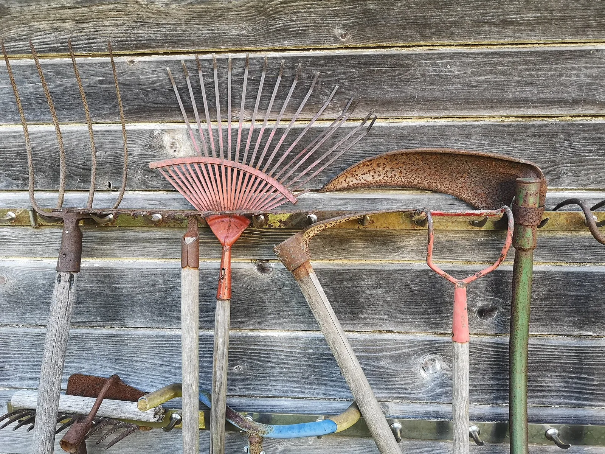

Qué tan ancha, qué tan larga, qué tan honda y de qué hacerla. El ancho es la única medida que importa, el resto lo decides tú, y aquí te explicamos cómo llenarla sin tirar el dinero.

Foto: Dereckson · CC BY 4.0, vía Wikimedia Commons.
Qué necesitas
Un lugar razonablemente plano y soleado, con seis a ocho horas de sol al día
Tablas o bloques para los lados, y con qué cortarlos y unirlos
Tierra para llenarla, una mezcla a granel de tierra vegetal y composta (el sustrato en costal cuesta mucho más)
Una cinta métrica y unas cuantas horas
Una cama elevada es un marco que sostiene un montón de buena tierra por encima del suelo que ya tienes. Te deja traer la tierra que quieres en lugar de pelearte con la que te tocó, y drena y se calienta más rápido en primavera. También marca una línea clara entre la tierra de cultivo y los pasillos, así que la tierra de cultivo nunca se pisa y se mantiene suelta. Si todavía estás decidiendo si una cama elevada es la opción correcta, la guía de tipos de huerto la compara con la cama en el suelo y las macetas. Esta supone que ya lo decidiste, y explica qué tan ancha, qué tan larga, qué tan honda y de qué hacerla.
¿Qué tan ancha hago la cama?
El largo lo decides tú y la profundidad es un rango. El ancho es la única medida de la que depende el diseño, y el planificador lo aplica como regla.
Una cama cuyo lado más corto pasa bastante de ~1.2 m (4 pies) tiene terreno interior al que no se llega desde sus orillas.
Si no lo sigues, aun así crece, solo que peor. El planificador lo sugiere.
Cómo funciona: Un alcance cómodo del brazo es de ~0.6 m, así que el terreno que mide de ancho más del doble de eso solo se puede cuidar parándose sobre la cama. Pararse sobre ella compacta el suelo y rompe la estructura que la cama existe para proteger.
Evidencia: cotejada con 2 fuentes en la literatura basada en investigación.
Las 2 fuentes
Iowa State Univ. Extension, Yard & Garden FAQ, raised bed size
Beds accessible on both sides can be 3 to 4 feet wide
Univ. of Minnesota Extension, Raised bed gardens
… the reach of your arm is generally a good metric ... If you can access both sides, the bed can be up to five feet wide.
Además, una nota de trabajo sobre cómo se leyeron las fuentes.
Solución
Convierte un área ancha en varias camas con un pasillo entre ellas, para que nunca tengas que meterte en una cama. En el planificador cada cama va por separado y no se puede dividir en partes, así que agrega otra cama.
Haz la cama de no más de unos 1.2 m4 pies de ancho. Eso es el doble de lo que alcanza cómodamente un brazo, así que puedes atender el centro desde cualquiera de las dos orillas sin pisar nunca la tierra. Una cama en la que tienes que meterte pierde su razón de ser, porque tu peso compacta la tierra que el marco existe para mantener suelta. Si solo puedes llegar a la cama por un lado, porque está contra una pared o una cerca, redúcela a la mitad, a unos 0.6 m2 pies.
Una vez que sabes el ancho, el mismo principio del alcance decide cómo la vas a sembrar.
Una cama plantada mantiene cada planta al alcance del brazo desde un pasillo, un borde o una hilera por la que se pueda caminar.
Si no lo sigues, aun así crece, solo que peor. El planificador lo sugiere.
Cómo funciona: Puedes alcanzar con comodidad unos 60 cm (2 pies) dentro de un bancal. La tierra que queda más lejos de un camino o de un borde solo se puede cuidar pisándola, y eso la compacta. Por eso, un bancal que se trabaja desde sus bordes y mide más de unos 1.2 m (4 pies) de ancho se organiza en franjas de siembra de no más de 1.2 m, con caminos de unos 50 cm (20 pulgadas) entre ellas. Un campo se trabaja desde surcos por los que caminas, separados unos 75 cm (2.5 pies). Los bancales elevados, los de tierra y las macetas se trabajan desde sus bordes; en un campo se camina entre surcos.
Evidencia: cotejada con 2 fuentes en la literatura basada en investigación.
Las 2 fuentes
Iowa State Univ. Extension, Yard & Garden FAQ, raised bed size
Beds accessible on both sides can be 3 to 4 feet wide
Univ. of Minnesota Extension, Raised bed gardens
… the reach of your arm is generally a good metric ... If you can access both sides, the bed can be up to five feet wide.
Además, 2 notas de trabajo sobre cómo se leyeron las fuentes.
El largo es libre. Hazla tan larga como te permitan tu espacio y tu madera. El único límite práctico es que una cama muy larga es mucho camino para rodearla, así que la mayoría deja cada tramo en unos 2.4–3.6 m8–12 pies y dejan un pasillo.
La profundidad es un rango. Las guías de extensión coinciden en unas 20–30 cm8–12 pulgadas de cama para la mayoría de las hortalizas. Si el suelo natural de abajo es decente, la tierra de la cama y el suelo de abajo funcionan como una sola columna más profunda, y unos lados más bajos están bien. Si la vas a construir sobre una superficie dura, como un patio, arcilla compactada o un lugar donde no puedes cavar, hazla más honda, de 30 cm12 pulgadas o más, para que los cultivos de raíz tengan espacio. Las zanahorias y otras raíces son la razón clásica para construir hacia arriba. Una cama honda y suelta les da el camino recto que no encuentran en un suelo apretado.
¿De qué hago los lados?
El marco es la parte fácil, y no tiene que ser elegante ni caro. Opciones comunes y buenas:
Madera sin tratar resistente a la pudrición: cedro, secuoya o alerce. Se pone gris con el tiempo y dura años.
Madera de construcción común: más barata y de vida más corta; está bien para una primera cama que a lo mejor mueves.
Bloque de concreto, ladrillo o piedra: permanente, no se pudre, cuesta más trabajo dejarla nivelada.
Evita los durmientes de tren viejos y otras maderas tratadas con creosota. La madera tratada a presión moderna usa conservadores a base de cobre que los servicios de extensión en general consideran de bajo riesgo para el huerto, pero si eso te hace dudar, forra la cara interior con plástico o usa madera sin tratar. Uses lo que uses, construye el marco nivelado y en escuadra. Las paredes aguantan el peso de la tierra mojada, así que une bien las esquinas.
¿Con qué la lleno y cuánto me va a costar?
Aquí es donde una cama elevada cuesta más de lo que la gente espera, porque una cama contiene un volumen de tierra sorprendente y la estás comprando toda. Llénala con una mezcla a granel de tierra vegetal y composta, más o menos mitad y mitad, pedida por yarda cúbica a un proveedor de jardinería. Los costales de sustrato para macetas están hechos para macetas y cuestan varias veces más por volumen. Multiplica el largo por el ancho por la profundidad para sacar el volumen antes de pedir.
Si aciertas con la tierra la primera vez, casi nunca la vuelves a tocar. La tierra de una cama elevada no se agota al final de la temporada. Se asienta. La guía de qué hacer con la tierra del año pasado explica cómo renovarla, y por qué cambiarla casi nunca es la respuesta.
El motor no te va a inventar una cifra de fertilizante. Si quieres saber qué necesita tu mezcla nueva, pide un análisis de suelo. Una tabla solo puede adivinar.
Ahora que está hecha, ¿hay algo que deba evitar?
Construyes una tierra suelta y a tu alcance para producir más en menos espacio, pero ese “más” tiene un techo, y amontonar plantas por encima de él te cuesta justo la cosecha que buscabas. Cada planta sigue necesitando su superficie de adulta, y el planificador mantiene ese límite.
La extensión adulta de una planta debe caber en el área que tiene asignada.
Planta según el tamaño adulto de la etiqueta. La plántula que tienes en la mano es mucho más pequeña que la planta en la que se convierte. Una cama llena a tope para que se vea completa en mayo es una cama de plantas raquíticas y propensas al moho en julio. Luego siembra tu primera temporada con la guía de la primera cama, paso a paso, que calcula los tiempos a partir de tus fechas de helada.
Para leer más
Buenos lugares para leer más sobre la técnica de esta página. La calificación de cada tarjeta viene de las fuentes de esa misma tarjeta.